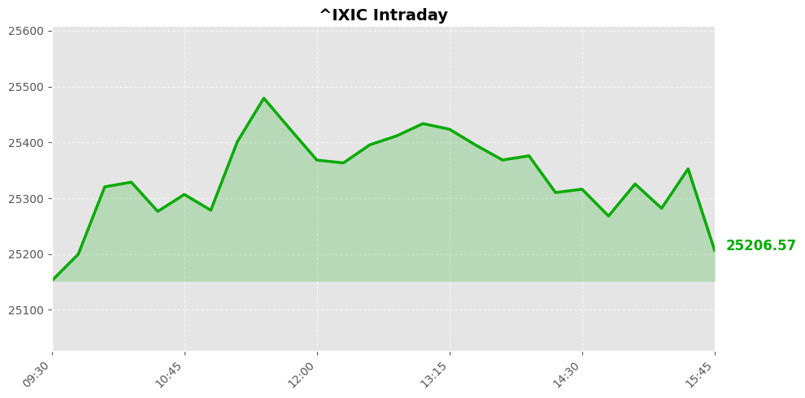
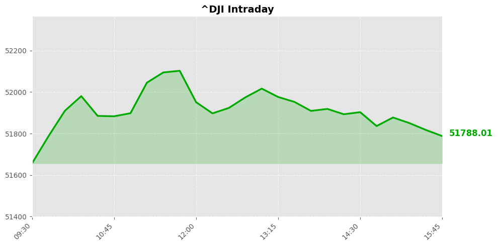
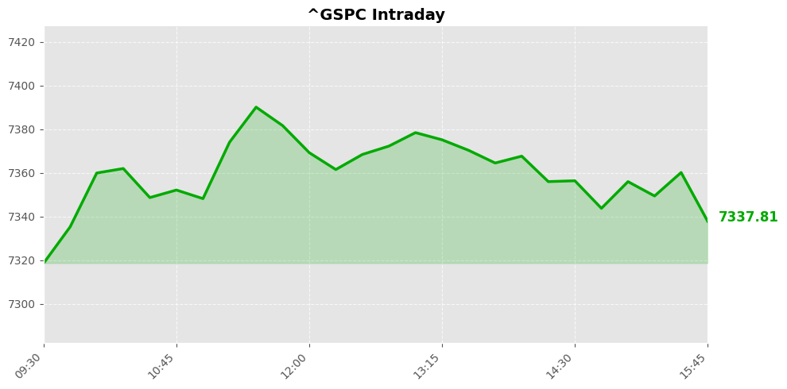

美股市场简报
2026年06月27日 | StockGate 美股通
📊 市场概览
纳斯达克指数 25297.62 ▼ -60.98 (-0.24%)

道琼斯指数 51876.11 ▼ -44.51 (-0.09%)

标普500指数 7354.02 ▼ -3.47 (-0.05%)

三大主要指数在本交易日收盘表现不一，整体呈现分化格局。其中，纳斯达克指数表现相对承压，收盘报25297.62点，下跌0.24%，跌幅在三大指数中居前，显示科技股板块面临一定获利了结压力。道琼斯指数收盘报51876.11点，小幅回落0.09%，相对抗跌，表明传统蓝筹板块仍具备一定支撑。标普500指数收盘报7354.02点，微跌0.05%，跌幅最小，整体市场情绪较为平稳，并未出现恐慌性抛售迹象。
综合来看，当前市场处于温和调整阶段，科技股的高位回调是近期主要拖累因素，而道指的相对坚挺则反映出资金在成长与价值板块之间的再平衡操作。市场等待新的方向性催化剂，短期走势可能继续呈现震荡整固格局，建议密切关注科技龙头企业的盈利预期变化以及宏观经济数据对市场情绪的进一步指引。
📰 今日要闻
今日市场主要关注点方面，地缘政治风险骤然升级成为核心焦点。美国对伊朗实施军事打击，此前一艘商船在霍尔木兹海峡遭到攻击，这一事件直接威胁全球能源运输咽喉要道，原油价格和避险资产预计将受到显著推动。以色列与黎巴嫩在美国斡旋下达成初步协议，为中东局势带来有限缓和信号。阿联酋则澄清了一次虚假公共警告，确认系技术故障所致。
Oracle经历了自2001年互联网泡沫破裂以来最糟糕的一周，其人工智能领域的巨额投入、负面的自由现金流以及高达1300亿美元的债务负担令投资者信心遭受重创，反映出市场对AI商业化融资模式的深层忧虑。
潜在市场影响因素包括地缘冲突对能源供应的冲击、AI企业融资可持续性争议，以及医疗健康板块的政策不确定性。医疗保健股近期表现强劲，但GLP-1减肥药新药的上市可能给雇主赞助的医疗保险覆盖带来成本压力，Novo Nordisk和Eli Lilly等药企面临需求增长与保险覆盖之间的博弈。
值得关注的行业动向方面，航空航天板块中Honeywell Aerospace获得分析师看好评级，医疗健康板块三只标的齐创新高显示资金持续流入防御性领域，而新上市公司也获得机构建仓关注，整体市场风格呈现明显的避险转向特征。
📈 宏观经济数据
💰 利率与货币政策
联邦基金利率： 3.6% -0.0个百分点 （前值: 3.6%）
观察日期: 2026-05-01 | 下次公布: 2026-07-29
10年期国债收益率： 4.4% -0.0个百分点 （前值: 4.4%）
观察日期: 2026-06-25 | 下次公布: 2026-06-29
🔥 通胀指标
消费者物价指数(CPI)： 4.2% +0.4个百分点 （前值: 3.8%）
观察日期: 2026-05-01 | 下次公布: 2026-07-14
PCE物价指数： 4.1% +0.3个百分点 （前值: 3.8%）
观察日期: 2026-05-01 | 下次公布: 2026-07-30
核心PCE物价指数： 3.4% +0.1个百分点 （前值: 3.3%）
观察日期: 2026-05-01 | 下次公布: 2026-07-30
生产者物价指数(PPI)： 6.4% +0.8个百分点 （前值: 5.7%）
观察日期: 2026-05-01 | 下次公布: 2026-07-15
👷 就业指标
非农就业人数变化： 159001.0K +172.0K （前值: 158829.0K）
观察日期: 2026-05-01 | 下次公布: 2026-07-03
失业率： 4.3% 0.0个百分点 （前值: 4.3%）
观察日期: 2026-05-01 | 下次公布: 2026-07-03
🛒 消费者指标
零售销售月度变化： 0.9% +0.5个百分点 （前值: 0.4%）
观察日期: 2026-05-01 | 下次公布: 2026-07-16
个人消费支出月度变化： 0.7% +0.3个百分点 （前值: 0.4%）
观察日期: 2026-05-01 | 下次公布: 2026-07-30
🔮 市场展望
美股最近一个交易日小幅收跌，市场情绪明显受到地缘政治因素主导。美军在霍尔木兹海峡商船遇袭后对伊朗实施军事打击，中东局势急剧升温，油价波动风险显著上升，这将成为短期内主导市场的核心变量。与此同时，甲骨文因AI融资担忧出现2001年科网泡沫破裂以来最大单周跌幅，科技板块承压明显，市场对AI商业化路径的可持续性的重新评估仍在进行。以色列和黎巴嫩在美国斡旋下达成初步协议，这在一定程度上缓解了中东全面冲突的担忧，为市场提供有限支撑。
从方向判断来看，未来一到两个交易日美股可能呈现震荡整理格局，地缘局势的每一步进展都将直接引发市场快速反应。若霍尔木兹海峡航运恢复正常且无进一步冲突升级迹象，市场风险偏好有望小幅修复，科技股可能出现技术性反弹。反之，若伊朗方面采取报复性行动或海峡封锁风险上升，避险情绪将推动资金从股市流向黄金和国债，指数面临回调压力。投资者需要重点关注中东局势的最新进展、原油价格波动对通胀预期的影响，以及本周即将公布的PCE等关键经济数据。在当前环境下，建议保持适度谨慎，控制仓位并密切关注地缘风险溢价的变化。
数据来源：Yahoo Finance / Finnhub / Alpha Vantage / FRED / Reddit
报告生成：2026-06-27 06:05
⚠️ 免责声明：美股市场简报 - 2026年06月27日。StockGate 美股通 - 本报告仅供参考，不构成投资建议。投资有风险，入市需谨慎。
🔥 扫码加入【股神星】专属群 🔥
扫码加入股神星交流群，一起享受财富人生
📱 下载飞书App，扫描二维码入群
获取更多美股投资洞察与实时动态